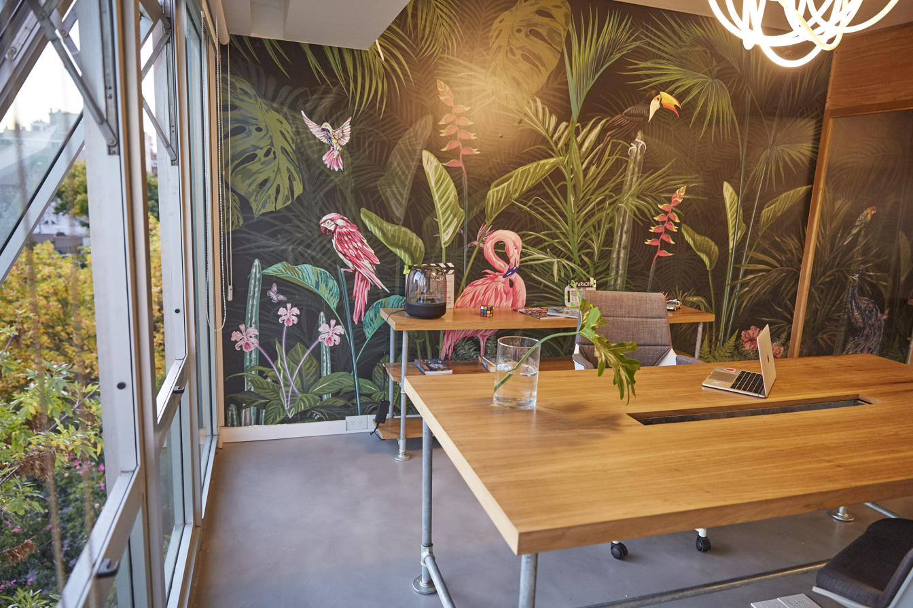

01 · Sala de reuniones
Diseño que inspira conversaciones.
Mesa rectangular de madera con base de hierro para cuatro personas, enmarcada por un mural tropical de autor con flamencos y tucanes — el sello visual del espacio. Iluminación contemporánea y vista a la ciudad.
- Capacidad4 personas
- MobiliarioMesa madera + hierro
- DetalleMural botánico